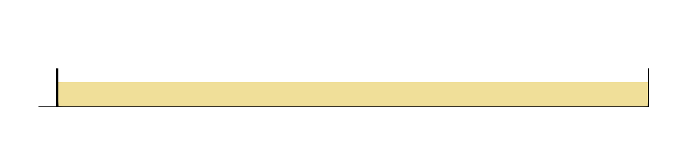
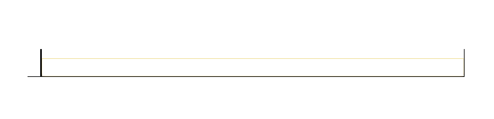

Wave Generation¶
This example demonstrates wave generation using a piston-type wavemaker with second-order correction. Regular waves are generated in a numerical wave flume with a damping zone at the far end to absorb reflected waves. This case illustrates the implementation of the Biesel transfer function and Madsen's second-order wave theory.
What's Covered in This Tutorial
This case demonstrates the following DualSPHysics capabilities:
- Second-order piston-type wave generation
- Moving boundary implementation for wavemaker motion
- Passive wave absorption using damping zones
- VTK output for wave visualization

Case Configuration¶
Physical Setup¶
The simulation represents a 2-D wave flume with:
- Water depth: \(d\) = 0.66 m
- Wave height: \(H\) = 0.15 m
- Wave period: \(T\) = 2.00 s
- Flume length: 15.5 m (with 4.50 m damping zone)
- Particle spacing: \(dp\) = 0.02 m
For this case, we use:
- Boundary mkbound=10 for piston wavemaker (moving)
- Boundary mkbound=0 for tank bottom
- Boundary mkbound=1 for right wall
- Fluid mkfluid=0 for water
Geometry Definition¶
Domain Setup¶
<definition dp="0.02">
<pointref x="0.0" y="0.0" z="0.0" />
<pointmin x="-1.00" y="0.0" z="-1.00" />
<pointmax x="20.0" y="0.0" z="2.00" />
</definition>
Domain boundaries: Extends from -1.0 to 20.0 m in \(x\)-direction and -1.0 to 2.0 m in \(z\)-direction, accommodating the wave flume and allowing space for particle motion. Having \(y\)-direction set to 0.0 indicates that a 2-D simulation will be created.
Piston Wavemaker¶
<setshapemode>real | bound</setshapemode>
<setdrawmode mode="full" />
<setmkbound mk="10" />
<drawbox>
<boxfill>solid</boxfill>
<point x="-0.05" y="-1.0" z="0.0" />
<size x="0.05" y="2.00" z="1.00" />
</drawbox>
Shape mode: real | bound indicates real (moving) boundary particles.
Wavemaker configuration: - Position: x = -0.05 to 0.00 m (5.0 cm thick piston) - Height: 1.00 m (extends above water depth of 0.66 m) - Marker: mkbound=10 for identification in motion definition
Wavemaker Thickness
The piston thickness should be at least 2-3 particle spacings (here 0.05 m \(\approx 2.5\times dp\)) to ensure structural integrity during motion.
Tank Bottom and Walls¶
<setmkbound mk="0" />
<drawbox>
<boxfill>bottom</boxfill>
<point x="-0.50" y="-1.0" z="0.0" />
<size x="16.0" y="2.0" z="1.00" />
</drawbox>
<setmkbound mk="1" />
<drawbox>
<boxfill>right</boxfill>
<point x="-0.50" y="-1.0" z="0.0" />
<size x="16.0" y="2.0" z="1.00" />
</drawbox>
Tank configuration:
- Bottom wall (mkbound=0): Extends 16 m from piston
- Right wall (mkbound=1): Far end of flume
Water Volume¶
<setmkfluid mk="0" />
<fillbox x="1.00" y="0.0" z="0.05">
<modefill>void</modefill>
<point x="-1.00" y="-1.0" z="-1.00" />
<size x="20.0" y="2.0" z="1.66" />
</fillbox>
Fluid filling: fillbox can automatically generate particles in complex shapes with modefill="void" by filling the domain within which the seed point (fillbox x="1.00" y="0.0" z="0.05") is located.
Fillbox Method
The fluid fills all available space not occupied by boundaries or voids.
Motion Configuration¶
Wavemaker Motion Definition¶
Motion setup:
objreal ref="10": References boundary particles with mkbound=10 (piston)begin mov="1" start="0": Activates motion ID 1 at \(t=0.0\)mvnull id="1": Placeholder motion (actual motion controlled bywavepaddles)
Motion Control
The mvnull serves as a placeholder. The actual piston motion is computed dynamically by the wavepaddles functionality based on wave parameters.
Wave Generation Parameters¶
Wave generation in DualSPHysics follows the Biesel transfer function for piston-type wavemakers. This case implements second-order wave generation following Madsen's theory, which prevents the generation of spurious secondary waves.
Wave Generation Theory
For detailed mathematical derivations of the Biesel transfer function, first-order and second-order wave generation theories, and validity conditions, see the Wave Generation documentation.
Piston Wavemaker Configuration¶
<special>
<wavepaddles>
<piston>
<mkbound value="10" comment="Mk-Bound of selected particles" />
<waveorder value="2" comment="Order wave generation 1:1st order, 2:2nd order (def=1)" />
<start value="0" comment="Start time (def=0)" />
<duration value="0" comment="Movement duration, Zero is the end of simulation (def=0)" />
<depth value="0.66" comment="Fluid depth (def=0)" />
<pistondir x="1" y="0" z="0" comment="Movement direction (def=(1,0,0))" />
<waveheight value="0.15" comment="Wave height" />
<waveperiod value="2" comment="Wave period" />
<phase value="0" comment="Initial wave phase in function of PI (def=0)" />
<ramp value="1" comment="Periods of ramp (def=0)" />
<savemotion periods="20" periodsteps="20" xpos="6.0" zpos="-0.26"
comment="Saves motion data. xpos and zpos are optional. zpos=-depth of the measuring point" />
</piston>
</wavepaddles>
</special>
Key parameters explained:
Wave characteristics:
waveheight="0.15": Wave height \(H\) = 0.15 mwaveperiod="2.00": Wave period \(T\) = 2.0 sdepth="0.66": Water depth \(d\) = 0.66 m
Generation control:
waveorder="2": Second-order wave theory (includes correction for spurious waves)start="0": Wave generation begins at simulation startduration="0": Continues until simulation endphase="0": Initial phase \(\delta = 0\) (wave starts at equilibrium)ramp="1": Smooth ramp-up over 1 wave period to avoid initial transients (2 or more should be used)
Motion direction:
pistondir x="1" y="0" z="0": Horizontal motion in positive \(x\)-direction
Output:
savemotion periods="20" periodsteps="20": Records piston motion for 20 wave periods with 20 time steps per periodxpos="6.0" zpos="-0.26": Saves theoretical wave elevation and velocity at \(x=6.00\) m, \(z=-0.26\) m (within water depth)
Wave Order Selection
Second-order generation (waveorder="2") is strongly recommended for physical accuracy. It prevents the generation of parasitic long waves that would contaminate the wave field.
Passive Wave Absorption¶
Damping Zone Configuration¶
<damping>
<dampingzone>
<limitmin x="11" y="0" z="0" />
<limitmax x="15.5" y="0" z="0" />
<overlimit value="1" />
<redumax value="10" />
</dampingzone>
</damping>
- Location: \(x\) = 11.0 to 15.5 m (4.50 m length, approximately 3 wavelengths)
- Overlap:
overlimit="1"extends damping 1.00 m beyond specified limits for smooth transition - Damping coefficient:
redumax="10"controls dissipation strength
Function: Gradually reduces particle velocities to absorb wave energy and minimize reflection from the far boundary.
Damping Zone Length
A damping zone of 1-2 wavelengths is typically sufficient. For this case with wavelength L ≈ 1.5 m, the 4.5 m zone provides effective absorption.
Numerical Parameters¶
Smoothing Length¶
<constantsdef>
<coefh value="1.2" comment="Coefficient to calculate the smoothing length (h=coefh*sqrt(3*dp^2) in 3D)" />
</constantsdef>
Smoothing length: \(h = 1.2 \times \sqrt{(2×dp²)}\)
Slightly larger than default (coefh=1.0) for improved stability in wave simulations.
Kernel and Viscosity¶
<parameter key="ViscoTreatment" value="1" comment="Viscosity formulation 1:Artificial, 2:Laminar+SPS, 3:Laminar (default=1)" />
<parameter key="Visco" value="0.01" comment="Viscosity value" />
<parameter key="ViscoBoundFactor" value="0" comment="Multiply viscosity value with boundary (default=1)" />
- Artificial viscosity \(\alpha = 0.01\)
- No boundary viscosity (
ViscoBoundFactor="0") to reduce boundary drag forces
Simulation Duration¶
<parameter key="TimeMax" value="30" comment="Time of simulation" units_comment="seconds" />
<parameter key="TimeOut" value="0.05" comment="Time out data" units_comment="seconds" />
- Total time: 30 seconds (15 wave periods)
- Output interval: 0.05 seconds (40 outputs per wave period)
Running the Simulation¶
Execute the case using the provided batch/shell script:
Windows¶
REM Generate case geometry
gencase.exe CaseWavemaker_Def CaseWavemaker_out/CaseWavemaker -save:all
REM Run simulation on GPU
dualsphysicsgpu.exe -gpu CaseWavemaker_out/CaseWavemaker CaseWavemaker_out/CaseWavemaker/data
REM Convert to VTK format
partvtk.exe -dirdata CaseWavemaker_out/CaseWavemaker/data -savevtk post/PartFluid -onlytype:-all,+fluid
Linux¶
# Generate case geometry
./gencase CaseWavemaker_Def CaseWavemaker_out/CaseWavemaker -save:all
# Run simulation on GPU
./dualsphysicsgpu -gpu CaseWavemaker_out/CaseWavemaker CaseWavemaker_out/CaseWavemaker/data
# Convert to VTK format
./partvtk -dirdata CaseWavemaker_out/CaseWavemaker/data -savevtk post/PartFluid -onlytype:-all,+fluid
Results and Analysis¶
Visual Results¶
Video 1 shows the wave generation and propagation.


Wavemaker Motion¶
The piston motion is saved in the output files and can be compared with theoretical predictions:

The second-order correction modifies the piston stroke to eliminate parasitic long waves, as described in Madsen's theory.
Wave Profile Analysis¶
Free surface elevation measured at \(x = 6.00\) m:

The wave maintains constant amplitude and period, demonstrating successful second-order wave generation without spurious components.
Damping Zone Effectiveness¶
Wave amplitude decay in the damping zone:

The damping zone effectively absorbs >95% of wave energy, minimizing reflection.
Advanced Modifications¶
Irregular Wave Generation¶
To generate irregular waves, replace <piston> with:
Active Wave Absorption¶
Add active absorption to prevent reflection:
<piston>
...
<awas value="1" comment="Enables AWAS (default=0)" />
<awas_elevation value="0.02" comment="Distance to measure elevation" />
</piston>
References¶
◆ Madsen, O. S. (1971). On the generation of long waves. Journal of Geophysical Research, 76(36), 8672-8683. https://doi.org/10.1029/JC076i036p08672
◆ Schäffer, H. A., & Klopman, G. (2000). Review of multidirectional active wave absorption methods. Journal of Waterway, Port, Coastal, and Ocean Engineering, 126(2), 88-97.